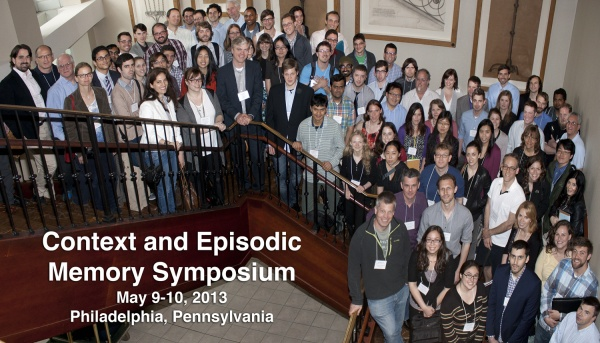

CEMS 2013


The 2013 Context and Episodic Memory Symposium (CEMS), now in its ninth year, will be held on the campus of the University of Pennsylvania in Philadelphia, PA, on May 9th and 10th, 2013.
The symposium is designed to be a forum for the exchange of ideas among colleagues working on theoretical and empirical approaches to the study of context and episodic memory, broadly construed.
Announcements
- Thanks to all presenters and attendees for making CEMS 2013 the best & most well-attended symposium to date!
- Be sure to download a copy of the group photo to the right.
- We are pleased to announce the winner of the Bennet B. Murdock Student Research Award for outstanding talk, data blitz, or poster presentation:
- Andrew Heusser for his poster, coauthored with Youssef Ezzyat and Lila Davachi, entitled, "Perceptual Shifts in Context Disrupt Associative but Facilitate Source Memory Retrieval".
- CEMS 2014 has been announced: May 8-9, 2014 at the Inn at Penn. Save the date!
Location & Hotel
The symposium will be held at the Inn at Penn, a Hilton hotel, which also serves as the host hotel for the conference.
Click here to view this location on Google Maps
Hotel
The page for making reservations at the CEMS group rate is available. Click here to book your hotel reservation at the Inn at Penn. If you book over the phone, please use group code "DOP".
More info on the Inn at Penn can be found on their website.
Travel
The University of Pennsylvania is served by Philadelphia International Airport and Amtrak 30th Street Station, and is a short train or taxi ride away from both.
From the Airport
- Towncar
- Uber is a on-demand towncar service that you can summon using an app on your iPhone or Android device, or from m.uber.com, or by texting an address and city to UBR-CAB (827-222).
- Airport flat rate to and from Center City (including Penn campus) is $60 for a towncar (up to 4 people comfortably) or $85 for a luxury SUV (up to 6 people comfortably)
- Normal rates for a towncar are a $7.00 base fare plus $3.75 per mile, or $0.85 per minute of wait time, with a $15 minimum fare. SUV rates are higher.
- Link a credit card to your account. No need to pay your driver directly, and tip is included.
- You must create an account first. Sign up using this CEMS 2013 link and receive a $10 bonus credit towards your first ride.
- Taxi
- Taxi fare between Center City Philadelphia (including Penn campus) and the airport is $28.50 each way for one passenger.
- For trips to Center City from the airport, there is an additional $1 fee per passenger. Most cabs hold up to 3 people.
- The trip takes between 15-30 minutes depending on traffic.
- Regional Rail
- The airport is served by SEPTA's Airport Regional Rail line, which stops at each terminal.
- In Center City, you may use either the University City or 30th Street stops on the Airport line.
- University City is a pleasant 0.6 mi walk through Penn's campus, while 30th Street Station is a less-pleasant 0.8 mi, but easier to hail a cab if desired.
- Tickets are $7.00 per person each way.
- The train is scheduled to run every 30 minutes.
- The trip takes 15-20 minutes depending on terminal, and the weekday schedule may be found here.
From 30th Street Station
- The walk from 30th Street Station to the Inn at Penn is roughly 0.8 miles and goes through the campus of Drexel University.
- There is a taxi stand immediately outside the East doors of the station.
- SEPTA's trolley and bus lines connect at 30th Street Station and cost $2.00 (exact change only, or you may buy tokens).
Driving/Parking
- The University of Pennsylvania is close to both I-76 and I-95.
- The Inn at Penn offers valet parking Charge at $39.00 for overnight parking with in and out privileges and 20.00 for daily event parking (prices subject to change).
- Self parking is available at a garage at 38th & Sansom, one block from The Inn At Penn. More garages may be found on this map.
Campus/Surrounding Area
More information about the University of Pennsylvania and its environs will be available soon.
Getting Around
- SEPTA subways, trolleys, and buses run all over Philadelphia.
- Normal base rate is $2.00 cash (exact change only), or a token. More information about fares can be found here.
- You may find a complete system map here. You can also find transit directions on Google Maps.
- Taxis are plentiful.
- Fares are a $2.70 flag drop plus $0.23 per 1/10 mi or 38 seconds of wait time.
- Uber is a on-demand towncar service that you can summon using an app on your iPhone or Android device, or from m.uber.com, or by texting an address and city to UBR-CAB (827-222).
- Normal rates for a towncar are a $7.00 base fare plus $3.75 per mile, or $0.85 per minute of wait time, with a $15 minimum fare. SUV rates are higher.
- Link a credit card to your account. No need to pay your driver directly, and tip is included.
- You must create an account first. Sign up using this CEMS 2013 link and receive a $10 bonus credit towards your first ride.
Registration
Click here to register unless you are a University of Pennsylvania faculty member, postdoc, student, or staff member and paying with a grant or other research funds. See below for Penn affiliate registration instructions.
Registration fees have been lowered (as of 2/15) thanks to grants from Penn's University Research Foundation and the School of Arts and Sciences:
- $220 for faculty
- $180 for postdocs
- $140 for students
The registration fees will cover meeting room rental, A/V costs, breakfast both days, snacks, and a reception on the evening of May 9th.
Late registration fees will begin on Monday, April 29th:
- $300 for faculty
- $250 for postdocs
- $200 for students
Student Travel Awards
A grant from the University of Pennsylvania's University Research Foundation (URF) has allowed us to give student travel awards to defray the costs of registration, travel, and lodging.
The student travel awards for this year have all been allocated.
Penn Affiliate Registration
If you are paying with a Penn fund number (grant, startup fund, departmental funds, etc): instead of paying via credit card on the above registration page, please send the following information to context.symposium@gmail.com:
- Registration type (faculty, postdoc, or student/staff)
- Preferred salutation (Professor, Dr., Mrs, Ms., Mr.) (optional)
- First name
- Last name
- Address
- City, state, zip
- Phone number
- E-mail address
- Any dietary restrictions (optional)
You will then receive further instructions on paying for registration with a Penn fund number.
Schedule
Talks are labeled by presenting author. Please see below for full author list, title, and discussant.
| Thursday | Friday | ||
|---|---|---|---|
| 8:00 | Breakfast | 8:00 | Breakfast |
| 9:15 | Welcome/intro | 9:15 | Data Blitz 2 |
| 9:20 | Maureen Ritchey | 10:05 | Robert Nosofsky |
| 10:05 | Youssef Ezzyat | 10:50 | Break |
| 10:50 | Break | 11:10 | Alison Preston |
| 11:10 | Gregory Koop | 11:55 | Sean Polyn |
| 11:55 | Geoff Ward | 12:40 | Lunch |
| 12:40 | Lunch/Photo | 14:00 | Karthik Shankar |
| 14:00 | Christopher Honey | 14:45 | Posters |
| 14:45 | Isabel Muzzio | 16:15 | Business mtg |
| 15:30 | Break | ||
| 15:50 | Data Blitz 1 | ||
| 16:30 | Invited Speaker: Ben Murdock | ||
| 17:15 | Reception & Posters | ||
List of Featured Talks
Unless otherwise marked with an asterisk (*), the first author listed is the presenting author.
- Maureen Ritchey, Andrew P. Yonelinas, Charan Ranganath (UC Davis): Medial temporal lobe subregions interact with functionally distinct systems
- Discussant: Ken Norman (Princeton)
- Youssef Ezzyat, Lila Davachi (NYU): Neural mechanisms supporting the temporal organization of episodic long-term memory
- Discussant: Per Sederberg (Ohio State)
- Gregory J. Koop, Amy H. Criss (Syracuse): Response dynamics as a measure of bias and strength in recognition memory
- Discussant: Adam Osth (Ohio State)
- Geoff Ward, Cathleen Cortis, Rachel Grenfell-Essam, Jessica Spurgeon, Lydia Tan (University of Essex): Why do participants initiate their immediate free recall of short lists of words with the first list item?
- Discussant:Karl Healey (Penn)
- Christopher J. Honey, Janice Chen, Erez Simony, Olga Lositsky, Daniel Toker, Kenneth A. Norman, Uri Hasson (Princeton): Temporal receptive windows in natural perception: a topographic map of mental context
- Discussant: Ryan Canolty (UC Berkeley)
- Isabel A. Muzzio (Penn): Effects of emotion on hippocampal contextual representations
- Discussant: Sam Gershman (MIT)
- Robert M. Nosofsky, Christopher Donkin, Jason M. Gold, Richard M. Shiffrin (Indiana University): Discrete-slots models of visual working memory response times
- Discussant: Michael Lee (UC Irvine)
- Alison R. Preston (University of Texas): Building new knowledge through memory integration
- Discussant: Marc Howard (Boston University)
- Sean M. Polyn (Vanderbilt): Incorporating neural signals into computational models of memory search
- Discussant: Jeremy Manning (Princeton)
- Karthik Shankar, Marc W. Howard (Boston University): Optimally fuzzy memory
- Discussant: Sue Becker (McMaster University)
Data Blitz Talks
Data blitzes are a new feature of CEMS this year. There will be two data blitz sessions, one on each day. Each presenter will give a short (five-minute) presentation outlining a main finding in a few slides. Each data blitz will have 3 minutes allocated for questions and changeover.
Unless otherwise marked with an asterisk (*), the first author listed is the presenting author.
Thursday (3:50-4:30)
- Aaron Bornstein: Evidence for episodic memory sampling in the service of decisions for reward
- Rui Cao, Richard Shiffrin: Target or Foil: Which Causes Output Interference?
- M. Karl Healey: Memory Search is Governed by Universal Principles---Not Idiosyncratic Strategies
- Ghootae Kim, Jarrod A. Lewis-Peacock, Kenneth A. Norman, Nicholas B. Turk-Browne: Pruning of visual memories based on contextual prediction error
- Anna C. Schapiro, Emma Gregory, Barbara Landau, Michael McCloskey, Nicholas B. Turk-Browne: The necessity of the medial temporal lobe for statistical learning
Friday (9:15-10:05)
- Aaron Goldstein, Nicolas Déry, Malcolm Pilgrim, Suzanna Becker: A novel memory task, a computerized version of the Concentration card game, for assessing the role of neurogenesis in contextual memory, spatial and visual pattern separation
- Pernille Hemmer, William Aue, Amy Criss: The relationship between multiple memory tasks
- Almut Hupbach, Jenny Weinberg, Victoria Shiebler: Forget-me, forget-me-not: reliable directed forgetting effects in preschool children
- Kiran Kumar, Suyog Chandramouli, Richard Shiffrin: [No title provided]
- Lynn J. Lohnas, Michael J. Kahana: A retrieved context account of the lag effect in free recall
- Vishnu Sreekumar, Simon Dennis: Using Life-logging to Assess Memory for When
Poster Presentations
Posters will be split into two sessions. Each poster has been given a preliminary assignment (Thursday session/Friday session). Please let us know as soon as possible if that day will not work for you!
Note: Posters must be smaller than 40" x 60"; that is the size of the board on which they will be displayed.
Unless otherwise marked with an asterisk (*), the first author listed is the presenting author.
Thursday (4:30-6:00)
- Branden Abushanab, Lili Sahakyan: How Forward and Reverse Mental Time Travel Affect Context Accessibility in the List-Before-Last Paradigm
- William R. Aue, Jessica M. Fontaine, Amy H. Criss: Word frequency and context variability effects dissociate as a function of test type
- Stephanie C.Y. Chan, Marissa C. Applegate, Neal W. Morton, Sean M. Polyn, Kenneth A. Norman: Recall order is predicted by category-specific neural activity of preceding items at study
- Yvonne Y. Chen, Jeremy B. Caplan: Theta and alpha reactivating at retrieval to produce good recognition memory
- Gregory E. Cox, Nicholas J. Lewis, Richard M. Shiffrin: Information Accumulation for Recognition: Dynamic Presentation and Diagnosticity
- Nicolas Déry, Malcolm Pilgrim, Martin Gibala, Jenna Gillen, J. Martin Wojtowicz, Glenda MacQueen, Sue Becker: Hippocampal neurogenesis reduces memory interference in young adults: opposing effects of exercise and depression
- Selda Eren-Kanat, B. Hunter Ball, Gene A. Brewer*: IFARM: A Model of Intention Formation and Retrieval
- Matthew Gillespie, Troy A. Smith, William A. Cunningham, Per B. Sederberg: Openness/intellect predicts critical item intrusions in the Deese-Roediger-McDermott Paradigm
- Adam E. Hasinski, Troy A. Smith, Per B. Sederberg: Context Repetition Effects for Perception and Memory with Nonfamous Faces
- Justin C. Hulbert, Kenneth A. Norman: Alternating study and retrieval practice leads to differentiation of competing memories
- Rebecca Kemper, Vishnu Sreekumar, Simon Dennis: Event memory: A cue analysis
- Jarrod A. Lewis-Peacock, Jonathan D. Cohen, Kenneth A. Norman: Neural evidence for the flexible use of working memory and episodic memory in prospective remembering
- O. Lositsky, D. Toker, J. Chen, C. Honey, U. Hasson, K. A. Norman: Time perception and contextual drift with a naturalistic stimulus
- Christopher R. Madan, Esther Fujiwara, Sara Gilliam, Jeremy B. Caplan: Enhanced memory due to reward value: Explicit memory effects may be mediated by attention, but implicit memory effects are not
- Jeremy R. Manning, David M. Blei, Kenneth A. Norman: A probabilistic temporal context model for tracking mental context using neural and behavioral data
- Adam F. Osth, Simon Dennis: Re-evaluating Constraints on Theories of Serial Order Memory
- Adam F. Osth, Simon Dennis*, Michael Lee: An Extended Bayesian Analysis of Recognition Memory: The Case of the List Strength Effect
- Brian M. Siefke, Troy A. Smith, Per B. Sederberg: Feature-based item distinctiveness is not necessary for von Restorff effects
- Inderdeep Singh, Marc W. Howard: Theta oscillations as a mechanism for predicting trajectories through future events
- Troy A. Smith, Vishnu Sreekumar, Simon Dennis, Per B. Sederberg*: Tracking the neural correlates of real-world temporal context
- Zoran Tiganj, Karthik H. Shankar, Marc W. Howard: A biophysical model for encoding the Laplace transform of stimulus history
Friday (2:45-4:15)
- Angela M. AuBuchon, David B. Pisoni: Recency and Frequency Judgments of Speech under Cochlear Implant Simulation
- Ryan T. Canolty: Cross-level coupling as a potential mechanism for the dynamic maintenance of context and task-set: single neurons as network detectors and effectors.
- Patrick Crutchley, M. Karl Healey, Michael J. Kahana: A 4-factor analysis of individual differences in memory search and intelligence
- Sarah DuBrow, Lila Davachi: FMRI pattern similarity across boundaries predicts temporal order memory
- Jeffrey A. Greenberg, John F. Burke, Michael J. Kahana: Human electrocorticography of paired associate learning
- Andrew C. Heusser, Youssef Ezzyat, Lila Davachi: Perceptual Shifts in Context Disrupt Associative but Facilitate Source Memory Retrieval
- Alexander T. Keinath, J. T. Dudman, Isabel A. Muzzio: Spatial Representation in the Ventral Hippocampus
- James E. Kragel, Sean M. Polyn: Parietal contributions to episodic memory during free recall and source recognition tasks
- Melissa Lehman, Megan A. Smith, Jeffrey D. Karpicke: The role of context in the retrieval practice effect
- Neal W. Morton, Sean M. Polyn: A neurally constrained model of category clustering in free recall
- Melissa Prince, Lee Averell, Andrew Heathcote: Fundamental Causes of Variability in Recognition Memory
- Jeffrey J. Starns, Caren M. Rotello: A qualitative miss for the bivariate signal-detection model of recognition and source performance
Past Symposia
For information about previous years' CEMS, please click here.